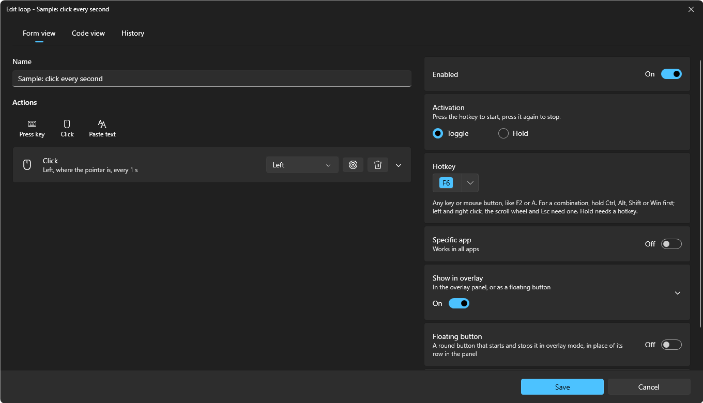

A loop repeats keys, combinations, mouse clicks or texts until you stop it. Select Add loop on the Loops page.

A loop that presses the left mouse button every second, started and stopped with F6.
The editor has what the loop does on the left (name and actions) and how it starts on the right (Enabled, Activation, Hotkey, Specific app, Show in overlay, Floating button, Sound).
Actions: the bar above them has one button per action, Press key, Click and Paste text. Each action repeats on its own timer, from 10 ms to 24 h. It is a box with its name, its main field and a summary, for example “Left click, where the pointer is, every 1 s”; open it for its options. The trash button removes it. The same boxes are the actions of a macro.
Press key waits for the key: press a key, or a combination by holding Ctrl, Alt, Shift or Win first (Esc cancels). Click the keys to choose others; their arrow has Change, Clear and the side of each Ctrl, Alt, Shift and Win (see Hotkeys). Mouse buttons are Click.
Click: choose the mouse button in the list (Left, Right, Middle, Back (X1), Forward (X2)), or select the button next to it (Detect the mouse button) and press the mouse button you want (Esc cancels).
Opened, Press key and Click have While the loop runs: Repeat presses it Every N ms, s, min or h; Hold down keeps it held while the loop runs, and only a key or button without Ctrl, Alt, Shift or Win can be held. While it is held, pressing and releasing that key or button yourself does not release it. With Repeat, also Hold for (how long it stays pressed before it is released, 30 ms by default and at most half the interval), Times (how many presses each time) and Pause between them (only with Times more than 1). A Click also has Mode (Single or Double) and Position: off, it clicks where the pointer is; on, at a fixed point (X, Y, or Pick on screen), also with Hold down.
Paste text: the text is pasted all at once, Every N ms, s, min or h, optionally with Press Enter before pasting and Press Enter after pasting. Your clipboard is restored afterwards.
Enabled: the same switch as on the loop's card. Off, the loop does not react to its hotkey.
Activation: Toggle (press the hotkey to start, press it again to stop) or Hold (runs only while the hotkey is held down).
Hotkey: optional. Select Set hotkey and press a key or mouse button; for a combination, hold Ctrl, Alt, Shift or Win first. With one of them held, left and right click, the scroll wheel and Esc work too (see Hotkeys). The hotkey is then shown in the accent color: click it to change it, or use its arrow for Change and Clear. Without a hotkey, start the loop with Play (▶) on its card or from the overlay panel. Hold needs a hotkey.
Specific app: off, the loop works in all apps. Turn it on to make it work in one app only, and choose the app: pick it in the list of running apps, select Pick and click a window of the app (the window under the mouse is outlined with the app's name; Esc cancels), or select Browse… and choose its .exe. Then:
Its hotkey works only while that app is in front. In other apps the key does nothing in PuppyMacro and reaches the app as usual.
When another app comes in front, the running loop stops. PuppyMacro's own windows (the main window, the overlay) do not count as another app.
Another loop or macro can use the same hotkey in another app, or in all apps: while the app is in front, the one for that app wins.
In overlay mode it is in the panel, or on its floating button, only while that app is in front (see Overlay mode).
Play on its card starts it in any case.
Show in overlay: on by default, the loop is in overlay mode, as a row of the panel or as its floating button. Inside, Hide when disabled leaves it out of the overlay while it is disabled, and Clicks also reach the app behind lets the app under it get the clicks too (see Overlay mode).
Floating button: a round button in overlay mode that starts and stops the loop, placed anywhere on the screen, with its own label, size and opacity (see Overlay mode).
Sound: turn it on to play a sound when the loop starts and stops, and click a sound to pick it and hear it. The volume of every sound is in Settings > Sound.
Code view, at the top of the window, shows the loop as JSON, as it is saved, in a code editor with suggestions and checks; see Macros > Code view. History, next to it, lists its saved versions and restores any of them; see Macros > History.
The Loops page
Each loop is a card with its name, its state (Running in green, Idle in blue, Disabled in yellow), the app it works in when it has a Specific app, what it does and how it starts, for example “Toggle with F6” or “Toggle, no hotkey”. On the right of the card:
Play (▶) starts the loop and Stop (■) stops it. A Hold loop has no Play: it runs only while its hotkey is held down.
Edit (the pencil) opens the editor. It is off while loops or macros are running.
The switch enables or disables the loop. A disabled loop does not react to its hotkey and is greyed out.
More options (⋯): Move up, Move down and Delete, which asks first.
You can also drag loops to reorder them. The search box and the filter (All loops, Enabled, Disabled, Running) help with long lists.